## ── Attaching core tidyverse packages ──────────────────────── tidyverse 2.0.0 ──
## ✔ dplyr 1.2.0 ✔ readr 2.1.6
## ✔ forcats 1.0.1 ✔ stringr 1.6.0
## ✔ ggplot2 4.0.1 ✔ tibble 3.3.1
## ✔ lubridate 1.9.5 ✔ tidyr 1.3.2
## ✔ purrr 1.2.1
## ── Conflicts ────────────────────────────────────────── tidyverse_conflicts() ──
## ✖ dplyr::filter() masks stats::filter()
## ✖ dplyr::lag() masks stats::lag()
## ℹ Use the conflicted package (<http://conflicted.r-lib.org/>) to force all conflicts to become errorsFor my final portfolio piece, I am going to build off of the previous portfolio piece on the Canadian National Election Study.
The selected data set, CES11, is derived from survey results regarding Canadian stances on banning abortion. As the previous portfolio pieces revolved around public opinion towards both presidential administrations and government poverty intervention, abortion is another salient issue that much of the population feels rather divided on.
As the last portfolio piece found the general distribution across Canada in regard to specific provinces and urban/rural cities, this portfolio piece will dive deeper. I am now interested other variables of this data set relating to importance and education which correspond to how strongly individuals feel towards their religion as well as their level of completed education
The goal of this final portfolio piece is to combine many skills learned in this data course and to answer some final questions I have regarding this data set. First, I want to provide some data visualization of the importance and education variables within the conversation of abortion stances. Secondly, I would like to single out Ontario and British Columbia specifically as this is where the majority of my family lives. I will conduct some data analysis on these new datasets to finalize this portfolio.
The data set, CES11, is derived from the carData package. There are 2231 observations and 9 variables included in this data frame. Each observation represents one surveyed participant. The 9 variables include ID, province, population, weight, gender, abortion, importance, education, and urban. The descriptions of each variable are listed below.
ID: Household ID number.
Province: A factor with (alphabetical) levels AB, BC, MB, NB, NL, NS, ON, PE, QC, SK; the sample was stratified by province.
Population: Population of the respondent’s province, number over age 17.
Weight: Weight sample to size of population, taking into account unequal sampling probabilities by province and household size.
Gender: A factor with levels Female, Male.
Abortion: Attitude toward abortion, a factor with levels No, Yes; answer to the question “Should abortion be banned?”
Importance: Importance of religion, a factor with (alphabetical) levels not, notvery, somewhat, very; answer to the question, “In your life, would you say that religion is very important, somewhat important, not very important, or not important at all?”
Education: A factor with (alphabetical) levels bachelors (Bachelors degree), college (community college or technical school), higher (graduate degree), HS (high-school graduate), lessHS (less than high-school graduate), somePS (some post-secondary).
Urban: Place of residence, a factor with levels rural, urban.
Before I jump back in, here is what we learned from Portfolio 5.
## gender n
## 1 Female 1244
## 2 Male 987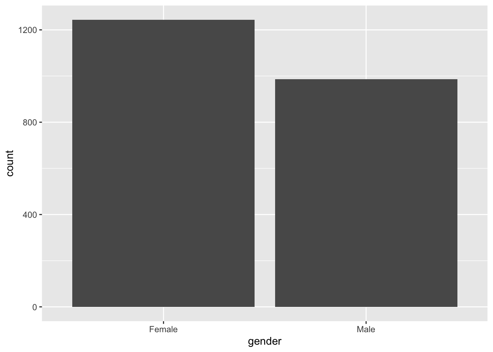
From this simple bar plot, I am able to understand that the sample is made up of slightly more females than males in the participant pool. Out of the 2231 total participants, 1244 of the participants are females while 987 are males.
## province n
## 1 AB 106
## 2 BC 252
## 3 MB 112
## 4 NB 72
## 5 NL 75
## 6 NS 81
## 7 ON 687
## 8 PE 87
## 9 QC 652
## 10 SK 107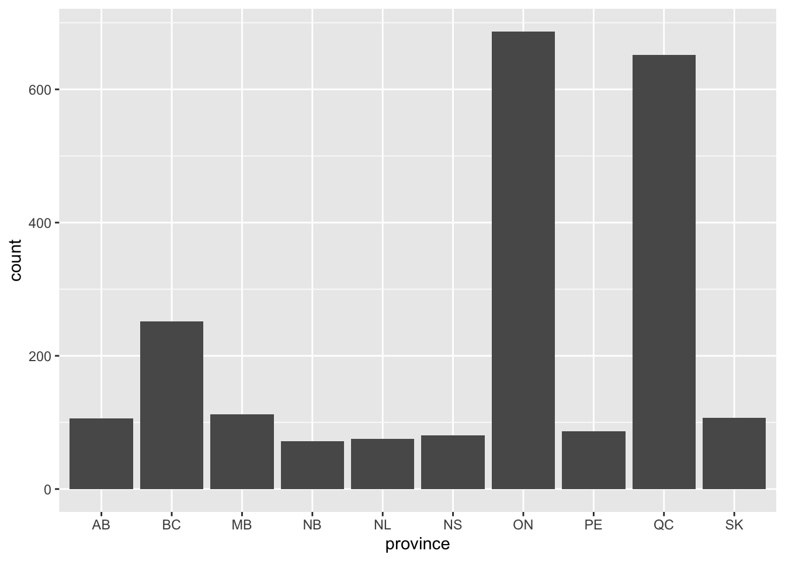
According to this data output, the majority of particpants are from the provinces of Ontario and Quebec with British Columbia the third most apparent.
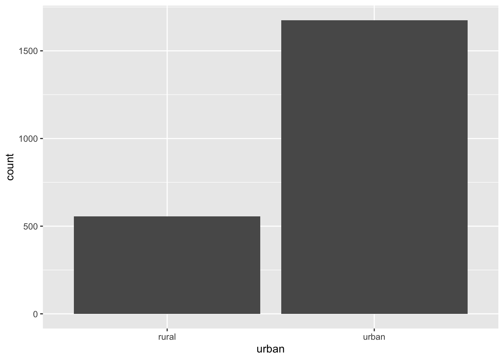
Additionally, the majority of respondents are from urban areas within these listed provinces with a smaller minority from the more rural areas of Canada.
In regards to the abortion question:
## abortion n
## 1 No 1818
## 2 Yes 413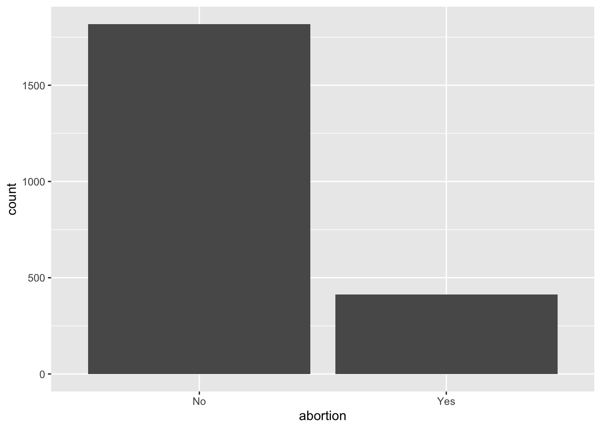
According to this data presentation, the majority of respondents (81%) believe that abortion should not be banned while a smaller amount of respondents (19%) believe that abortion should be banned. From this study, we can understand that about 4/5 of Canada believe that abortion should not be banned.
A greater look:
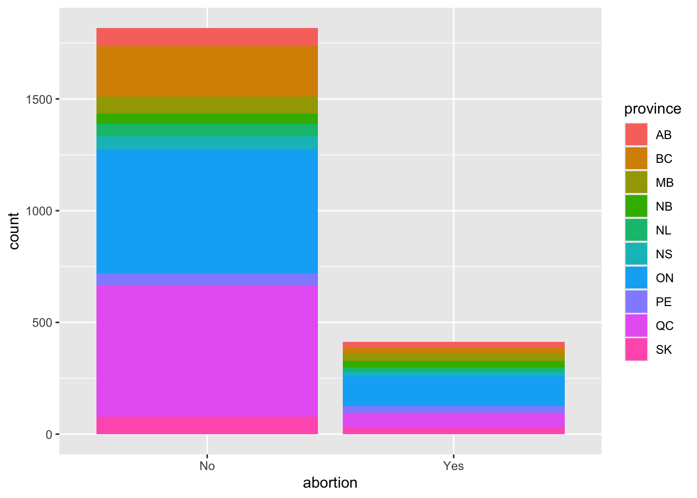
And finally:
CES11 %>%
ggplot(aes(x = abortion, fill = province, color = urban)) +
geom_bar() +
facet_wrap(~ province) +
labs(title = "Should Abortion be Banned?",
subtitle = "Faceted by Province",
color = "urban")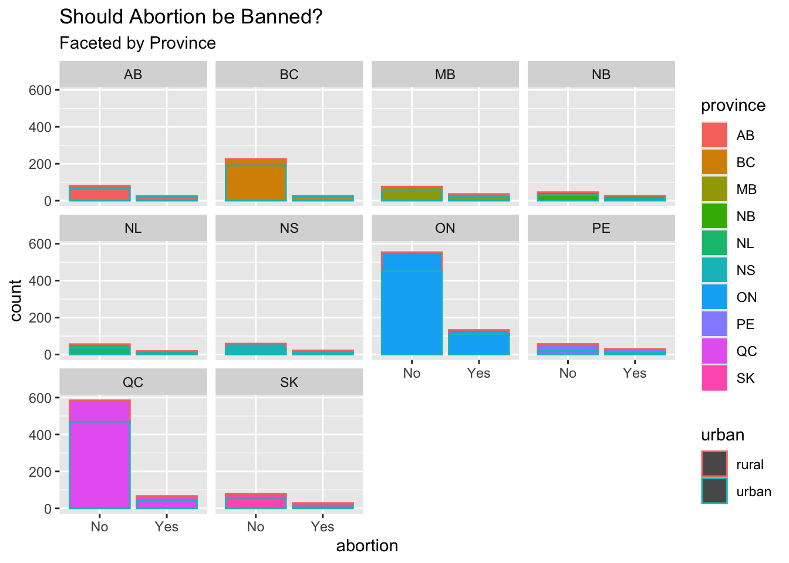
From Portfolio Piece 5, we learned that Ontario and Quebec make up the majority of respondents. Additionally, the majority of Canada (81%) belive abortion should not be banned and this was apparent in each of the 10 provinces.Now for the curent portfolio, I will first investigate the two variables that we have not addressed yet.
## importance n
## 1 not 607
## 2 notvery 315
## 3 somewhat 714
## 4 very 595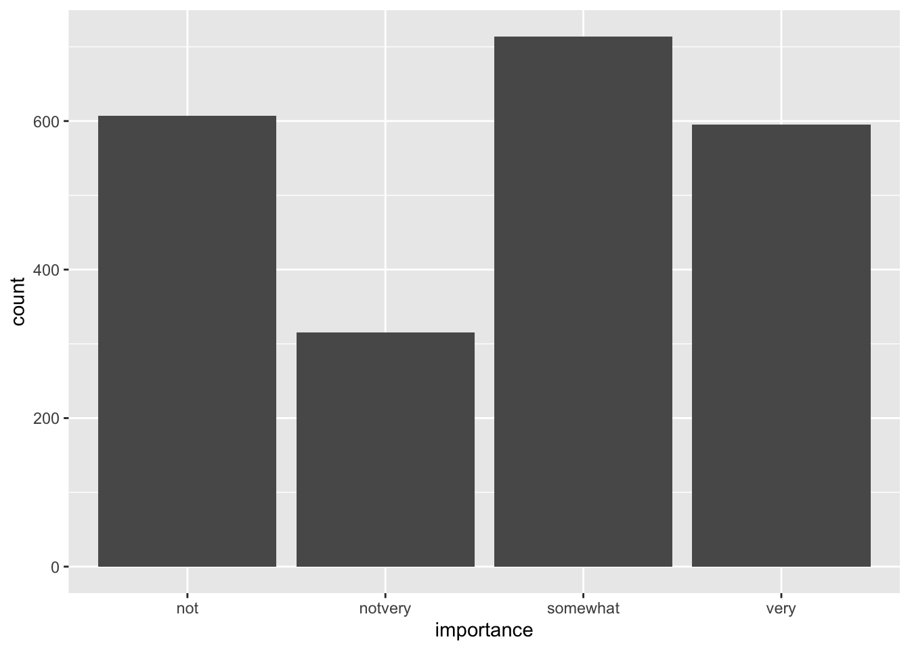
While the greatest majority of respondents feel somewhat strongly about their religion, the second highest majority felt that their religion was not very important to them.
## education n
## 1 bachelors 506
## 2 college 491
## 3 higher 246
## 4 HS 467
## 5 lessHS 267
## 6 somePS 254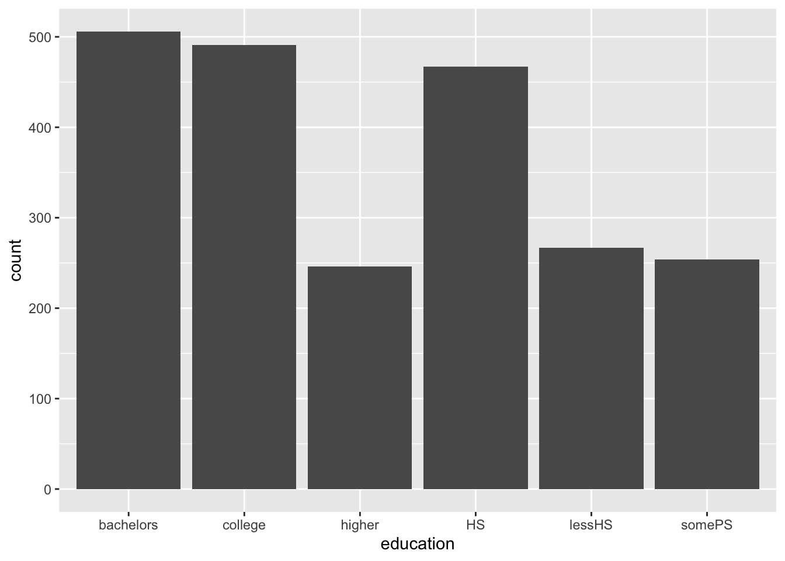
The majority of respondents have completed at least a high school degree and a large percentage have completed a college degree and/or a bachelors degree.
For the second goal, I want to filter this dataset so that I can isolate the provinces of Ontario and British Colombia. My mothers side of the family is from and lives in Ontario while most of my fathers side lives in British Colombia. It will be interesting to see how these provinces, on opposite sides of the country, differ.
## abortion n
## 1 No 554
## 2 Yes 133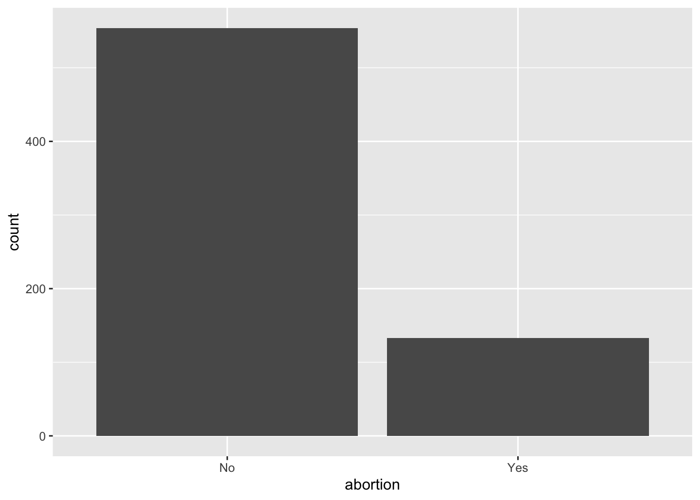
According to the Ontario data, 81% belive that abortion should not be banned. This aligns perfectly with the average Canadian results.
Now that I have a separate dataset with only Ontario, I will create a similar dataset with only British Columbia respondents.
## abortion n
## 1 No 226
## 2 Yes 26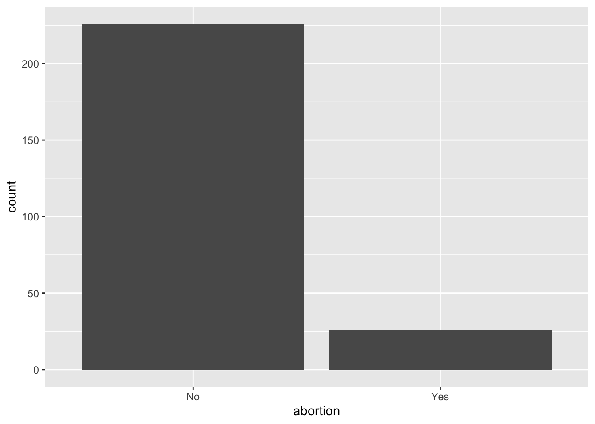
In British Columbia on the other hand, there is a greater percentage, 90%, that believe that abortion should not be banned. This is a greater majority compared to both Ontario and the average Canadian response.
I wonder why this is? Here I will explore the effect of both education and importance.
Ontario:
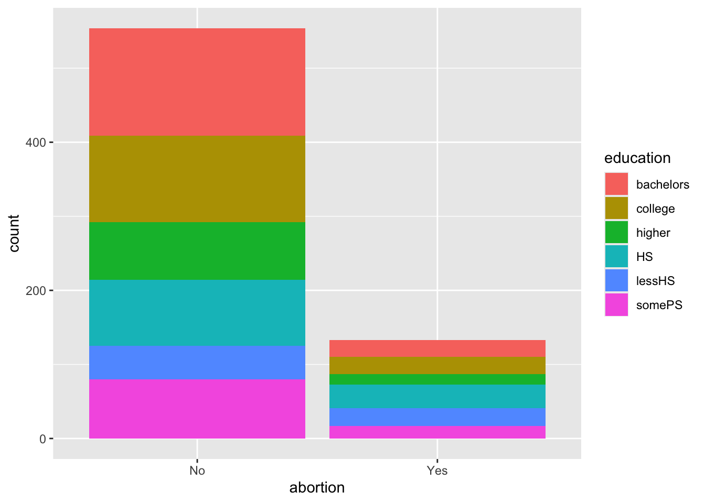
British Columbia:
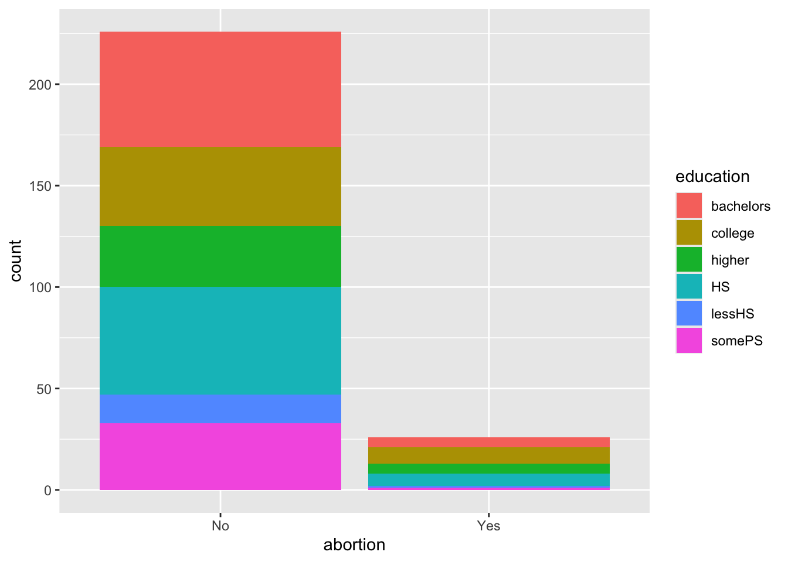
The two plots above visualize the abortion response faceted by level of completed education. In both provinces, it does not appear that level of education strongly correlates with abortion response as there appears to be a generally even distribution acorss both responses.
What about religion as a factor?
Ontario:
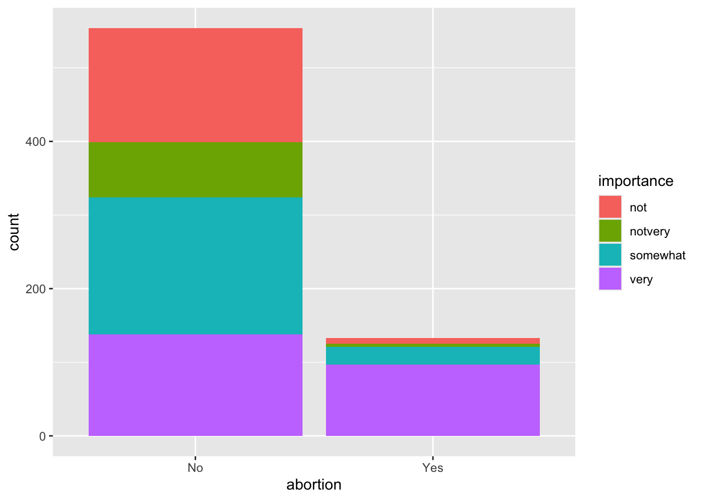
British Columbia:
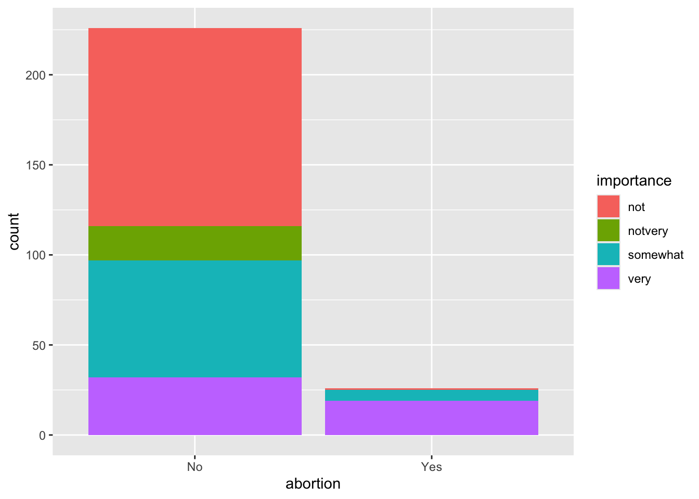
According to this data analysis, importance of religion does have a significant effect as almost all individuals who noted that religion was “not” important, responded that abortion should not be banned. On the other hand, religion being “very” important did not have any substanial effect. This was valid for both provinces.
From this portfolio piece, I have learned that in cases of Ontario and British Columbia, level of completed education did not seem to have much effect on abortion stance. Although, I did find that when respondents do not feel strongly about a relgion, they generally respond that abortion should not be banned, leading me to conclude that religious importance might be an effective factor for predicting respondents answers to the abortion survey question in the Canadian National Survey.
Over the course of this portfolio, I have explore three different data sets. Each with their own variables, background, and particpants, I have gotten to take a closer look at issues that are important to me. With interests in both psychology and political science, I have appreciated the opportunity to merge my acadmemic interets in a space where I could experiment and learn. Thank you for your time!